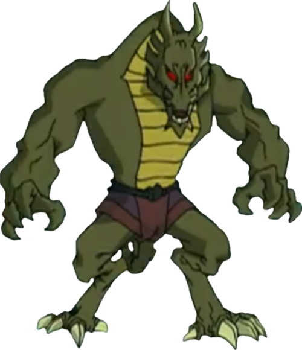
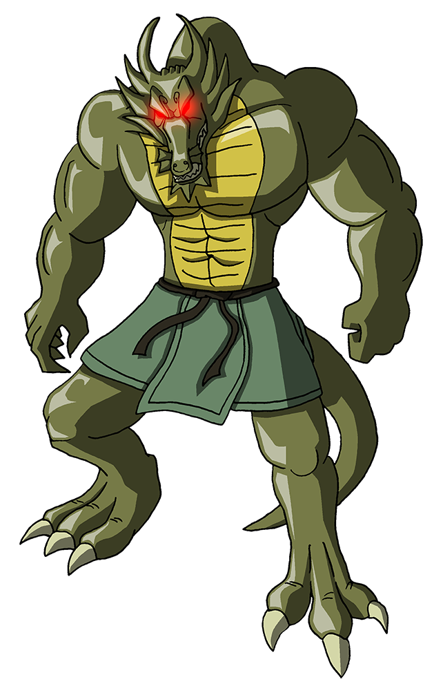
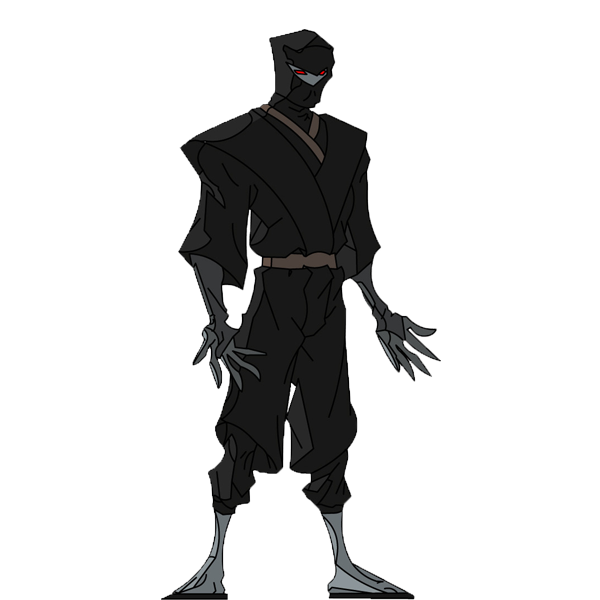
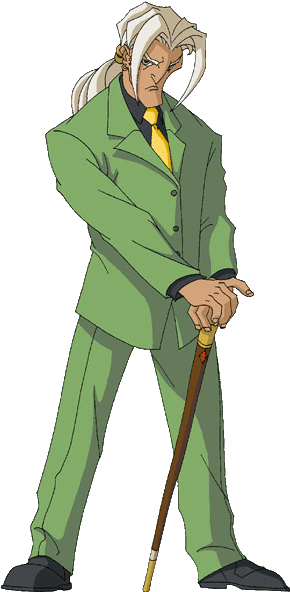

ADVENTURE OF Jackie_Chan
Shendu
Shendu was once the demonic dragon ruler of China, but his subjects rebelled with Lo Pei, who turned him into a statue, and then scattered his twelve powers in the form of twelve talismans. Shendu vowed revenge, but was unable to do so for 900 years. He eventually teamed up with the Dark Hand, promising them a lost treasure in return for the talismans. Finn, one of the three enforcers, commonly and playfully refers to Shendu as "Shen-Dude." After they finally recovered them, Shendu came to life, raising his palace. However, Shendu was blasted into dust by Jade Chan. As a statue he possessed a raspy, hissing voice until he was revived. When reanimated, he had a deeper, more sinister voice; after he was turned back into a statue he retained his hissing, raspy voice from then on (even when he was no longer a statue.) His roars also sound similar to the roars of the Tyrannosaurus of the Jurassic Park films.
Shendu returned as a spirit and was revealed to be the Fire Demon, one of eight Demon Sorcerers. He had originally been banished with the rest of his brethren by the eight immortals to the Demon Netherworld, but had somehow resurfaced in China before Lo Pei turned him to stone (this detail is never touched upon in the series.) He ended up trapped in Valmont's body by mistake, but was eventually banished back into the Demon Netherworld. He escaped and possessed Jackie Chan to rewrite the Book of Ages, meaning the Demon Sorcerers rule the world. He made the Dark Hand and the Chan family into his slaves, but Jade escaped the time alteration by taking a page mentioning her and assembled the J-Team against him and the Demon Sorcerers. The Book of Ages was found and history restored.
Shendu is hated by his demon siblings. They resented in particular the fact that he was able to roam the Earth for more than nine centuries and that he made no attempt to free the rest of his brethren while they remained imprisoned in the Demon Netherworld. Shendu often expresses submissive (if not fearful) behavior around them in face of this antagonism. This may be because of his weakness and vulnerability, as he is usually non-corporeal when confronted, as well as the fact that they are collectively more powerful than he is. Shendu often acts craftily and evasively in order to defend himself, which further strengthens the disdain his brethren have towards him, especially when his tactics have proven deceptive (such as when he falsely claimed to be able to free all seven of them through his own vacant portal.)
Shendu was resurrected at the hands of Daolon Wong in exchange for the Dragon Talisman's power (since he is in fact the last living Dragon on Earth) but double-crossed him, taking the Dragon Talisman Power of Fire as well as both the Pig and Rooster powers that Wong had acquired previously. Shendu managed to reclaim all his powers, but after Daolon Wong was bested by his nemesis, Uncle Chan, Daolon divulged the ancient spell which Lo Pei used to turn Shendu into a statue. Uncle, Tohru, and Jackie Chan used this spell on Shendu, successfully turning him into a statue and at the same time recreating the Talismans.
Shendu was later revealed to have a son, a junior Fire Demon by the name of Drago. Coming from an alternate future, Drago attempted to use the magical Dragon's Teeth to free Shendu (the one in the future.) However, Drago accidentally destroyed the teeth, preventing the spell from coming to pass. Drago was captured and was sent to prison in the present Section 13, but escaped only to abandon his present-day father in favor of the Chi of the Demon Sorcerers (his aunts and uncles.) When Drago held Jackie, Uncle, and Captain Black captive, Jade removed a piece of Shendu's skin to use in a spell against his son, due to needing a DNA sample identical to Drago's. Later, Uncle went to Shendu seeking a way to strip Drago of the eight Demon powers. Shendu told Uncle that it was impossible, and asked Uncle to free him so he could defeat Drago. When Drago grew close to turning Earth into the Demon World, Uncle relented, using a spell to free Shendu from his statue imprisonment. Freed, Shendu battled Drago, but was outmatched by his superpowered offspring. To give Shendu a fighting chance, the J-Team gave him the Talismans. Tohru and Uncle then used a spell to send Drago plummeting into the Netherworld, but Drago used this opportunity to falsely apologize to his father and begged him for help. Shendu fell for it and was tricked, causing both of them to be sealed into the Netherworld, ending their threat and sealing both the Talismans and Demon Chi away forever.

Being the last Dragon in existence, Shendu also has the noble right to the Dragon Talisman power, and came to be in possession of all twelve Talisman powers. When Lo Pei performed the spell that imprisoned him in a statue form, these powers were stripped of him and each power turned into a talisman, each based on the Chinese zodiac. Unless Shendu was revived from his statue form by means of Dragon Teeth or an unknown spell used by Uncle, he would become dependent on the Talismans, especially the Rat Talisman to sustain his animated form and the Dog Talisman for his immortality. Presumably if revived from his statue form by an alternate means than the Talismans, he would still require them to achieve his full potential and hence would be considerably inferior without them than if he were not dependent on the Talismans.
According to Uncle, he is also immune to non-magical weapons, even modern ones, presumably a trait shared by other demons including his own brethren. Shendu has been shown to withstand impacts from rocket launchers and high-powered laser cannons.
Shendu is possibly the only one with Talisman powers. The powers of his brothers and sisters come from unknown origins, yet it is often thought that they come from talismans that are separate from the 12 Chinese zodiac animals. Perhaps these talismans are not necessarily restricted to just animals. There is also a commentary of Dai Gui, Shendu's brother and an Earth demon, where, while fighting with the talisman's powered "J-Team", he says "Shendu and his accursed talismans!," something that indicates that the talismans are a special ability of Shendu's that's unrelated to his siblings. Perhaps like the Oni mask in his possession, the talismans were simply acquired or created by him for his own use in addition to his natural powers. The episode where Uncle turns him back into a statue with Lo Pei's spell seems to imply that Shendu's powers originally were not in the talismans, but rather the talismans were created to contain the powers stripped from him.
Shadowkhan
A group of shadow warriors formerly controlled by Shendu. In Season 4, it was revealed Shendu only possessed this power because of a special Oni Mask; Daolon Wong also controlled the Shadowkhan briefly through the same mask. Jade also manages to control them by making a tattoo from the face (notably Tarakudo's) off the cover of a book; she is briefly possessed by its dark power and takes over Section 13 before Tohru manages to remove the tattoo. Tarakudo, king of the Shadowkhan, was later awakened and set out to capture the nine Oni masks that control nine different tribes of Shadowkhan. Chow later put on the first Oni mask and took temporary control before having it removed by Jackie. Season four also revealed that there are nine tribes of Shadowkhan, each controlled by an Oni general. When the generals were sealed within masks, the host that wears the mask controls the Shadowkhan. Almost every Shadowkhan has the same body, powers, and abilities of their Oni. Tarakudo is the only Oni that cannot summon Shadowkhan, despite being known as the 'king of all Shadowkahn'; it is hinted that he is able to summon all the types but never gets a chance to before he is imprisoned in his mask (along with the other Oni Generals and their respective Shadowkahn.)
VALMONT ( WALTER )
The leader of the Dark Hand who hails from the United Kingdom. He is a skillful criminal mastermind and martial arts expert who is able to hold his own against (and even get the better of) Jackie in their personal confrontations.
Valmont first conspires with Shendu to acquire all the Talismans (Season 1). He serves mainly as a front man for Shendu, rarely meeting Jackie in person. He returns in Season 2, again aiding Shendu (this time involuntarily, since he is accidentally possessed by Shendu) to free the Demon Sorcerers. He later makes other appearances on the show, mostly serving as a minor villain, since his fortune and criminal empire crumbled after the Demon Sorcerer incident and the Talisman hunt.
By Season Three, Valmont is homeless and poor and becomes interested in committing robberies to rebuild the Dark Hand, such as unsuccessfully attempting to take control of Tohru to rob a rare jewel for this purpose. He appears only once in Season 4 where he has lost everything. He acquires an Oni mask, despite only receiving one half of it. Later, however, he rips it off as his own mind revolts against the Oni one; he tosses it aside for a box of diamonds but inadvertently gets wrapped up and shipped to Mexico instead. Valmont has brief non-speaking appearances in Season five, including applying for a job as Drago's henchman (but was immediately turned down.) He also appears in the final episode of the show aboard a bus the J-Team helps rescue from falling off a bridge, having taken up a job as a bus driver.